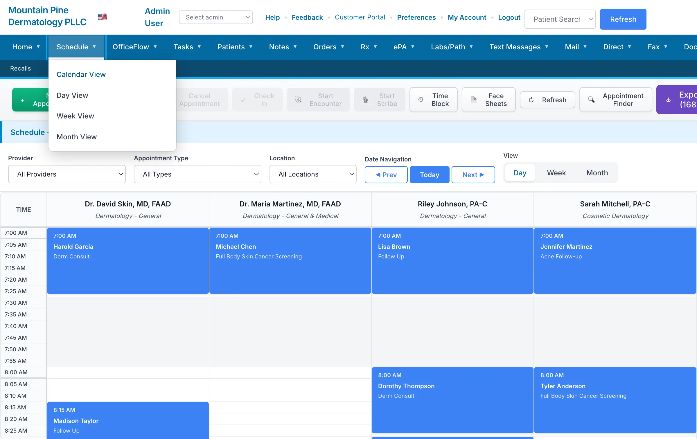
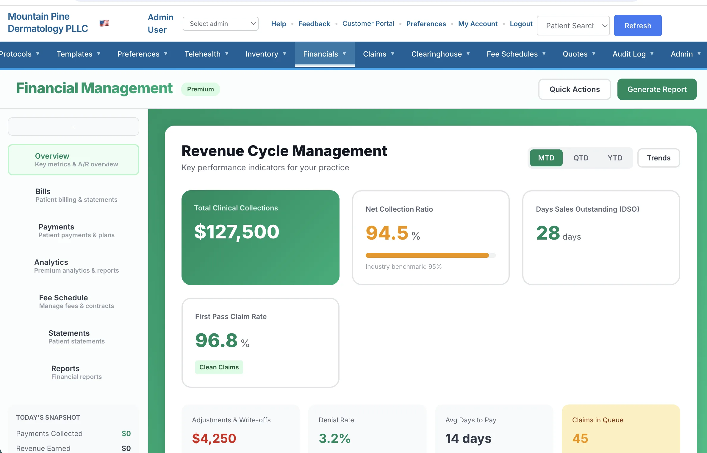
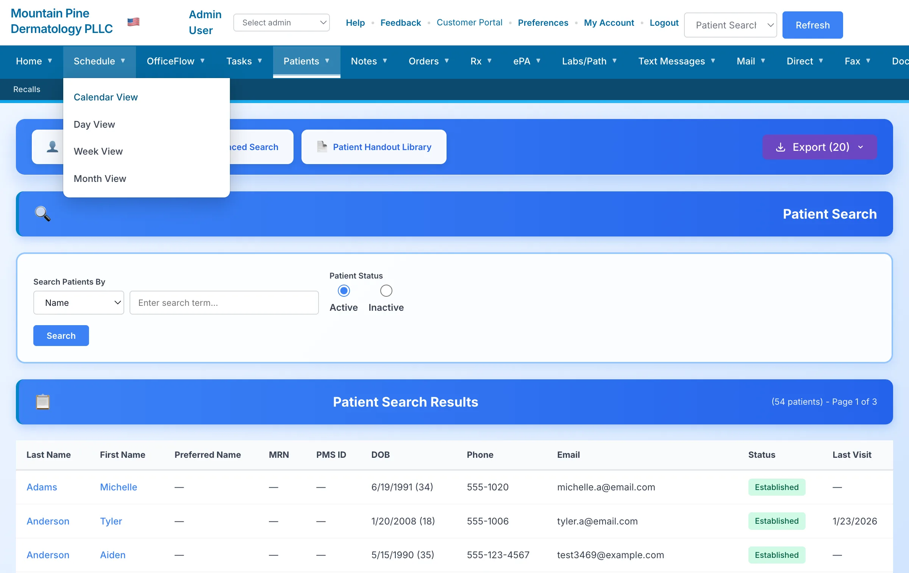

From the room to the chart—without losing the thread.
With patient consent, OAK EMR captures the appointment conversation, transcribes it, and prepares a structured clinical draft. The clinician reviews, edits, and approves what belongs in the record.
Appointment audio becomes a working transcript.
SOAP sections, visit summary, diagnoses, tests, and follow-up suggestions are organized for review.
Approved details connect to the encounter while suggested CPT, E/M, and ICD-10 information moves into a billing review workflow.
Human review stays in the loop. OAK EMR does not release claims automatically; clinicians and billing staff confirm the final record and charges.
Friday on the old system. Monday on OAK EMR.
We do the mapping, configuration, training, and validation before cutover. When the agreed source data and connections are ready, the final transition is planned over a weekend.
Source Data Review
We inventory the records and workflows in scope before migration work begins.
Data Cleaning & Import
Records are mapped to the agreed structure and reviewed through defined validation checkpoints.
Workflow Configuration
Templates, roles, schedules, and preferences are configured around the workflow reviewed with your team.
Hands-On Staff Training
Role-based training helps providers and staff prepare for the workflows they will use.
Go-Live Support
Support coverage and escalation paths are defined in your implementation plan.
Connection Planning
Required workflow connections are reviewed, scoped, and documented before implementation.
The OAK EMR transition
Weeks to prepare.
One weekend to switch.
Your team keeps running the practice while we coordinate scope, mapping, configuration, validation, training, and the final go-live plan.
Why Teams Revisit Their Workflow
Practice teams should not spend days chasing answers while work piles up.
Too many screens and disconnected handoffs make simple work harder than it should be.
Unclear data, training, and cutover responsibilities create avoidable uncertainty.
Practices deserve to understand exactly what they are paying for and what a modern alternative would cost.
Better Where Your Team Feels It.
Questions go to people who know the platform, your configuration, and your implementation.
Modern, connected workflows help each role see the work and next steps that matter.
Weeks of preparation lead to one controlled transition with validation and go-live support.
We compare matched recurring software scope so you can see the actual difference before deciding.
Keep the capability.
Cut the legacy markup.
Send a redacted recurring software invoice and your required modules. We will return a matched-scope comparison that separates subscription, implementation, migration, connections, and usage-based services.
Everything You Need. Nothing You Don't.
One platform for scheduling, documentation, billing, and patient engagement. Your quote clearly lists the included scope.
Smart Scheduling
Drag-and-drop calendar, automated reminders, waitlist management, and same-day rebooking.
Clinical Documentation
Touch-friendly charting, customizable templates, voice dictation, and reusable documentation macros.
Revenue Cycle Management
Charge capture, claim scrubbing, denial management, and real-time financial dashboards.
Patient Portal
Online scheduling, secure messaging, document access, bill pay, and digital intake forms.
Video Visit Workflow
Video visits with a virtual waiting room and documentation linked to the patient workflow.
Analytics & Reporting
Real-time dashboards, custom reports, productivity metrics, and financial forecasting.
Specialty Workflows
Specialty workflows, registries, photo timelines, recalls, and condition-specific documentation tools.
Security & Access Controls
Role-based access, audit logging, and encryption controls support responsible medical-office operations. Review our security approach.
Documentation and Follow-Up Stay Organized
Structured tools keep visit documentation, authorization work, and next steps connected to the patient record.
Structured Visit Documentation
Templates, Macros & Review
Organize HPI, exam findings, assessment, plan, orders, and follow-up in a consistent note workflow that remains under clinician control.
Prior Authorization Workspace
Evidence, Review & Status
Collect supporting chart information, prepare the request for staff or provider review, and track submission status from one work queue.
Modern Software. Modern Interface.
No clunky screens from 2005. OAK EMR looks and feels like the tools you use every day.

Intuitive Scheduling
See your entire day at a glance. Drag appointments, manage check-ins, and handle walk-ins without clicking through menus.

Financial Intelligence
Track collections, identify denial patterns, and see exactly where your revenue stands — updated in real-time.

Complete Patient Picture
Visit history, photos, documents, and notes — all in one place. No more hunting through different screens.
Interface screenshots contain illustrative demonstration data and do not represent customer results.
Clarity Across the Practice
Each role sees the information and next steps needed to keep the day moving.
Front Desk Clarity
Appointments, intake status, messages, balances, and checkout tasks stay visible in one workflow.
Clinical Continuity
Notes, photos, procedures, pathology follow-up, and recall activity remain connected to the patient record.
Revenue Visibility
Claims, denials, payments, and A/R queues give billing teams a clear place to review work and status.
A Defined Implementation Process
Scope, responsibilities, validation, training, and support are agreed before go-live.
Discovery Call
A focused conversation to understand your practice, priorities, and required workflows.
Data Migration
We review the source system, confirm the migration path, and define the data included in scope.
Staff Training
Role-based training prepares providers and staff for their day-to-day workflows.
Go Live + Support
The cutover plan includes validation checkpoints and documented support coverage.
Frequently Asked Questions
What makes OAK EMR different?
OAK EMR connects the daily clinical, administrative, and revenue workflows that medical practices manage across the day.
How do you evaluate a migration?
We review your current system, data format, record volume, workflows, and timing before confirming the migration scope and plan.
What if we don't like it?
Available contract terms and included services are documented in your quote before you approve the work.
Is my data secure?
OAK EMR uses layered access controls, encryption, and audit logging. Read our current security overview and discuss requirements with our team.
What about training my staff?
Training scope, delivery format, and follow-up support are defined for your organization during implementation planning.
Can you review our workflow requirements?
Yes. Share your required workflows and connections, and we will document what is included in the proposed implementation.
Make a Better-Informed Software Decision
Use practical guides for workflow evaluation, cost comparison, pathology follow-up, implementation, security review, and revenue-cycle measurement.
Medical Practice EMR Evaluation Guide
Compare clinical, administrative, billing, implementation, and security workflows.
Read the guide →Biopsy & Pathology Tracking
Map the handoffs from specimen documentation through results, notification, and follow-up.
Read the guide →Medical Practice EMR Cost Comparison
Compare recurring fees, implementation, migration, services, internal work, and contract terms.
Use the framework →Review OAK EMR With Your Workflows in Mind
Request a personalized walkthrough for the clinical, administrative, and revenue work your team wants to evaluate.
No credit card required. Prefer to talk? Call 541-231-8693.